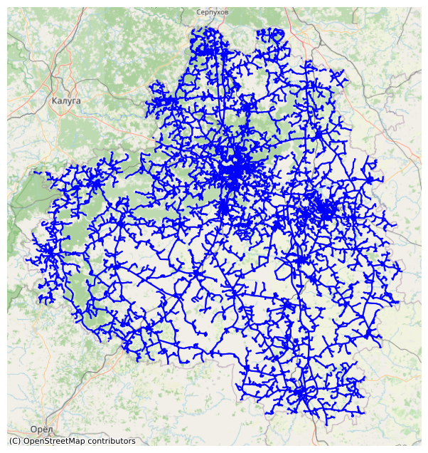
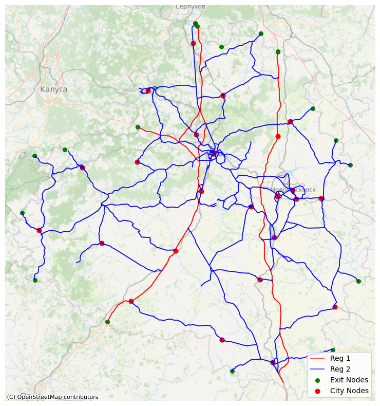
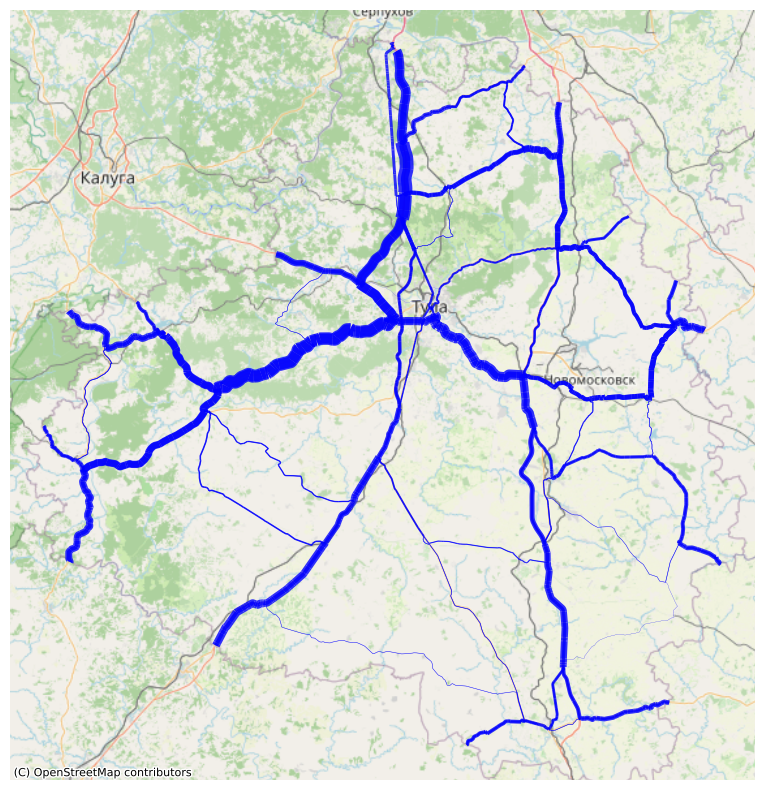
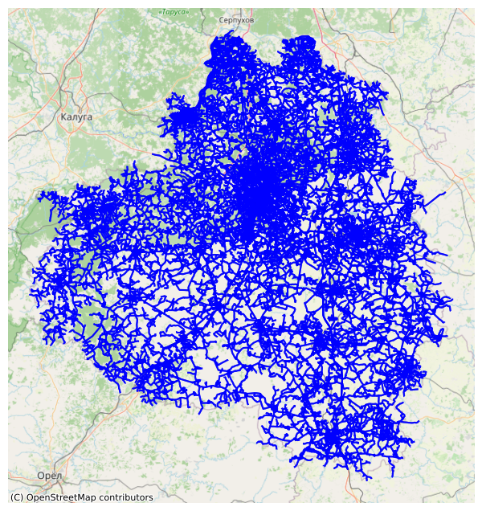

Graph creation
[1]:
import geopandas as gpd
import osmnx as ox
import os
os.getcwd()
import pickle
Initialization
The drive graph is generated using the polygon GeoDataFrame and the local CRS.
Ensure that the local CRS is a Projected CRS (e.g., UTM) rather than a Geographic CRS (e.g., EPSG:4326 - WGS84) to maintain accurate distance calculations.
[2]:
geocode = 81993 # Tula region geocode from OSM
polygon = ox.geocode_to_gdf(f'R{geocode}', by_osmid=True)
[3]:
from transport_frames.graph import get_graph
G_drive = get_graph(osm_id=geocode) # you can also pass territory GeoDataFrame instead of osm_id
2026-04-04 23:04:58.690 | INFO | Downloading drive network via Overpass ...
2026-04-04 23:04:59.062 | INFO | Downloading network via Overpass done!
2026-04-04 23:05:07.231 | WARNING | Removing 1550 nodes from 262 smaller strongly connected components. These are subgraphs where nodes are internally reachable but isolated from the rest. Retaining only the largest strongly connected component (35216 nodes).
[4]:
from transport_frames.utils.helper_funcs import plot_graph
plot_graph(G_drive)

[5]:
with open("data/G_drive.pickle", "wb") as f:
pickle.dump(G_drive, f)
Frame
Frame consists of federal and regional roads from the graph, adding exit attributes and district centers attributes to the nodes.
[6]:
regions = gpd.read_file('data/russia.geojson')
admin_centers = gpd.read_file('data/tula_region_admin_centers.geojson')
[7]:
from transport_frames.frame import get_frame, plot_frame
f = get_frame(G_drive,admin_centers,polygon,regions)
plot_frame(f)
Some cities weren’t assigned to nodes due to remote location: {'Новогуровский', 'Славный'}

Weighted frame
Weights are assigned to the edges and nodes based on the expected popularity of the path between pairs of exits.
[8]:
from transport_frames.frame import weigh_roads, plot_weighted_roads
weighted_frame = weigh_roads(f)
plot_weighted_roads(weighted_frame)

[9]:
with open("data/G_weighted_frame.pickle", "wb") as f:
pickle.dump(weighted_frame, f)
Intermodal graph
Intermodal graph is used for connectivity indicators and routes extraction. It can be obtained using iduedu library.
[10]:
from transport_frames.graph import get_intermodal_graph
G_inter = get_intermodal_graph(osm_id=geocode)
2026-04-04 23:06:21.802 | INFO | Downloading walk network via Overpass ...
2026-04-04 23:06:21.802 | INFO | Downloading routes via Overpass with types tram, bus, train, trolleybus, subway ...
2026-04-04 23:06:23.457 | INFO | Downloading routes via Overpass with types tram, bus, train, trolleybus, subway done!
2026-04-04 23:06:23.520 | INFO | Downloading network via Overpass done!
2026-04-04 23:06:37.744 | WARNING | Removing 815 nodes from 261 smaller strongly connected components. These are subgraphs where nodes are internally reachable but isolated from the rest. Retaining only the largest strongly connected component (128786 nodes).
2026-04-04 23:06:39.910 | INFO | Composing intermodal graph...
2026-04-04 23:06:51.427 | WARNING | Removing 1359 nodes from 1313 smaller strongly connected components. These are subgraphs where nodes are internally reachable but isolated from the rest. Retaining only the largest strongly connected component (130539 nodes).
[11]:
from transport_frames.utils.helper_funcs import plot_graph
plot_graph(G_inter)

[12]:
with open("data/G_inter.pickle", "wb") as f:
pickle.dump(G_inter, f)